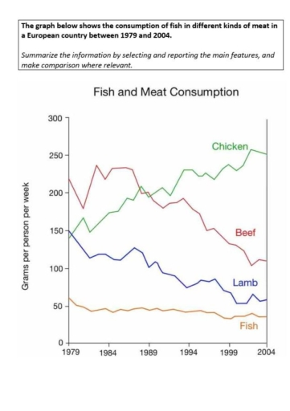

Это видео вам полностью обьяснит как достичь идеальный Band 9
Разница между Band 8 и Band 9 Эссе
Тут у нас пример вопроса Writing task 1 и Эссе на разные Band

Band 8
The graph illustrates the changes in the consumption of fish and other types of meat in a European country from 1979 to 2004. Units are measured in grams per person per week.
Overall, the consumption of all meat and fish fell, with the exception of chicken. Moreover, while beef was the most consumed at the start of the period, it had been overtaken by chicken by the end.
In terms of the two most consumed kinds of meat, beef had the highest consumption in 1979 at roughly 220 and witnessed a sharp drop by approximately 50 in 1981. Despite reaching a peak of about 240 in 1982, it fell drastically to just above 11 in 2004. In contrast, the consumption of chicken started slightly lower than that of beef at just below 150 in 1979. It then increased with fluctuations, surpassing that of beef at around 250 in 2004, and ending in 2004 at around the same level as beef started. In fact, the consumption of the two meats almost entirely reversed positions.
Regarding the less consumed meats and fish, lamb consumption started at a similar level as chicken in 1979. However, from this point onwards, it experienced a significant decline to about 60 in 2004. Likewise, in the beginning, fish consumption was by far the lowest at just over 50, which was nearly three times lower than that of lamb. In contrast to the other meats, over the span of 25 years, its consumption remained relatively steady, ending at slightly under that of lamb in the final year.
Band 9
The line graph illustrates the consumption of fish and three types of meat - namely beef, lamb and chicken - in a European country over a 25-year period from 1979 to 2004, measured in grams per person per week.
Overall, it is clear that chicken consumption rose dramatically, whereas both beef and lamb intake declined considerably. Fish, by contrast, remained relatively stable and was consistently the least consumed food throughout the period.
At the beginning of the period, beef was by far the most popular choice, standing at approximately 220 grams per person per week. However, its consumption fluctuated slightly in the early 1980s before undergoing a steady decline, ultimately reaching just over 100 grams in 2004. A similar downward trend was observed in lamb consumption, which fell gradually from around 150 grams to roughly 60 grams by the end of the period.
In contrast, chicken consumption experienced a significant upward trend, increasing from about 150 grams in 1979 to approximately 250 grams in 2004. Notably, it surpassed beef in the late 1980s to become the most widely consumed meat. Meanwhile, fish consumption showed only minor fluctuations, decreasing slightly from around 60 grams to just below 50 grams.
Проанализировав разницу между этими ЭССЕ вы можете понять что надо изменить что бы получить идеальный Band 9
Writing Task 2
Это видео вам полностью обьяснит как достичь идеальный Band 9
Разница между Band 8 и Band 9 Эссе
Тут у нас пример вопроса Writing task 2 и Эссе на разные Band
Some people believe that professionals, such as doctors and engineers, should be required to work in the country where they did their training. Others believe that they should be free to work in another country if they wish. Discuss both these views and give your own opinion.
Band 8
There are differing opinions regarding whether professionals, including doctors and engineers, should be obligated to work in the country where they received their training or if they should be at liberty to seek employment in another country. Proponents of the former view argue that professionals should contribute to the development of their home country, while proponents of the latter view maintain that individuals should have the freedom to pursue opportunities in other countries if they so desire.
Some individuals assert that specialists with professional skills often aspire to work in metropolitan areas due to the belief that smaller countries offer limited opportunities for professional growth and skill enhancement. For instance, it is argued that engineers may find fewer job opportunities in small towns, thereby limiting their career advancement. Similarly, doctors in such areas may have a smaller patient base, leading to limited professional exposure and lower remuneration. However, proponents of this view also stress the importance of professionals contributing to the development of their place of origin, irrespective of the challenges posed.
Conversely, others argue that it is beneficial for professionals to gain exposure to larger and more advanced cities during their training and then return to their home country to apply their enhanced skills to benefit their local community. Advocates of this viewpoint contend that professionals could utilize the expertise and knowledge gained in more developed cities to improve infrastructure or provide better healthcare in their hometowns. They emphasize the idea of a two-fold approach, where professionals initially contribute to their local area, subsequently acquiring additional skills and knowledge in bigger cities, and finally returning to further uplift their community.
In my opinion, while it is advantageous for professionals to broaden their horizons and enhance their skills in larger cities, they should ultimately prioritize contributing to the development of their home country. By doing so, they can leverage their advanced knowledge and expertise to bring about positive change in their local community. Therefore, I believe that professionals should be encouraged to seek opportunities for skill development in more developed cities but return to their place of origin to apply their enhanced skills for the greater benefit of their local community.
Band 9
The question of whether professionals like doctors and engineers should be mandated to work in the country where they received their training or have the freedom to work internationally elicits diverse opinions.
Advocates for mandatory local service argue that professionals owe a debt to the communities that supported their education. They contend that requiring individuals to work in their home country ensures that the skills and knowledge gained during training are directly applied to address local needs. This approach is seen as a way to address shortages of skilled professionals in certain regions, particularly those underserved or in need of specific expertise. Mandatory service is also perceived as a means of giving back to the community that invested resources in the individual's education.
On the other side of the spectrum, proponents of professional freedom emphasize the benefits of a globalized workforce. Allowing professionals to work in different countries fosters collaboration and the exchange of ideas, ultimately contributing to advancements in various fields. Professionals gain exposure to diverse working environments, expanding their skill set and fostering a more interconnected and innovative global community.
In my opinion, a balanced approach is crucial. While mandatory local service ensures a return on the investment made by the community, complete restriction may impede professional growth and limit global collaboration. Implementing a system that combines a mandatory service period with the option for professionals to work internationally would strike a balance, allowing individuals to contribute to their home country while fostering a globally interconnected professional community. This way, both local and global interests can be harmonized for the benefit of professionals and the societies they serve.
Проанализировав разницу между этими ЭССЕ вы можете понять что надо изменить что бы получить идеальный Band 9